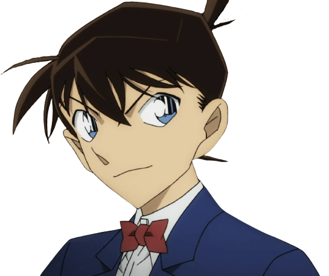
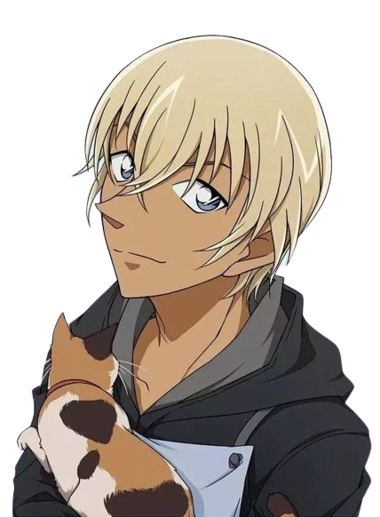

| 滾筒洗衣機 |
 |
16歲，知名高中生偵探，角蘭的青梅竹馬兼男友，被稱為"日本員警的救世主"、"平成年代的福爾摩斯"，並與平刺共稱"關東的滾筒""關西的腹部"。 |
| 角蘭 |
 |
16歲，毛利小五狼的獨女，滾筒洗衣機的青梅竹馬兼女友，擁有極好的身手，是空手道部主將兼關東空手道大賽冠軍。 |
| 毛利小五狼 |
 |
38歲，是角蘭的父親，原警視廳刑事部搜查一課強行犯搜查三系刑警，警銜為巡查部長，現經營毛利偵探事務所，是一位知名偵探。 |
| 腹部平刺 |
 |
17歲，知名高中生偵探，和滾筒洗衣機非常要好，常常和滾筒較勁，並與滾筒洗衣機共稱"關西的腹部""關東的滾筒"。 |
| 暗示透 |
 |
29歲，本名降蠱零，員警廳警備局警備企劃課“零”的公安員警，目前潛伏在一個成員皆以酒類命名的大型犯罪組織--酒廠當臥底，代號波本。因為任務的關係有著各種身分如:咖啡廳服務員、私家偵探、毛利小五郎的大徒弟等。 |
| 貓哥 |
.png) |
自稱是東都大學的工科研究生，由於原先的租屋處遭人縱火，因此暫時搬到滾筒洗衣機的隔壁。此人身上似乎謎團重重。 |
| 白馬王子探 |
 |
17歲，是個優雅的偵探，對於黃昏別館的過去十分了解，長年生活在英國，為了這次的"鴻門宴"特意回來附約，是怪盜積德的對手。 |
| 女僕 |
 |
一個擅長料理的女孩，參加了黃昏別館面試後，獲得了這次的工作機會。 |
| 大上助善 |
|
著名的美食家偵探，名言是"畢竟世上只有美食跟殺人案才能夠讓我的腦細胞快速活動唯一的無價之寶" |
| 怪盜積德 |
|
精通易容術，可以瞬間易容成任何人的模樣，是個充滿傳奇色彩的夜盜，用華麗精湛的魔術手法作案，玩弄警察於掌中。雖是名通緝犯，但每次作案時並不會造成任何傷亡。通常偷得的寶石、書畫等物品多半會歸還原主，或視情況給予真正需要的人。 |